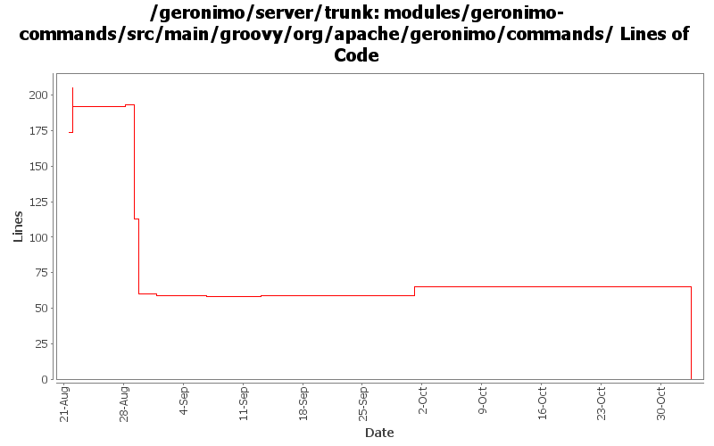

[root]/modules/geronimo-commands/src/main/groovy/org/apache/geronimo/commands

| Author | Changes | Lines of Code | Lines per Change |
|---|---|---|---|
| Totals | 32 (100.0%) | 151 (100.0%) | 4.7 |
| jdillon | 26 (81.3%) | 151 (100.0%) | 5.8 |
| prasad | 6 (18.8%) | 0 (0.0%) | 0.0 |
GERONIMO-3565. Modules distributed amongst framework/modules and plugins
0 lines of code changed in 6 files:
Fixed start-server command after some changes to decouple plexus from gshell
2 lines of code changed in 1 file:
Use ShellInfo to get the homeDir
7 lines of code changed in 1 file:
Adding stop-server command
1 lines of code changed in 2 files:
Add custom branding
0 lines of code changed in 1 file:
If the java agent jar is not available, then disable it otherwise the server will puke
2 lines of code changed in 1 file:
Update for the latest gshell changes
8 lines of code changed in 3 files:
Update to use latest gshell bits
2 lines of code changed in 2 files:
Pick a better name
1 lines of code changed in 1 file:
Put back all of the previous options, like -D, -J and -m, also make -v -v work, though until gshell-clp has posix-style support, -vv won't work :-(
55 lines of code changed in 1 file:
Hook up the jcl over slf4j for supporting any kernel bits we use from the start command
Cleaned up other command support classes to use the proper slf4j api
3 lines of code changed in 5 files:
Update to use gshell 1.0-alpha-1-SNAPSHOT, pending a little more work to finish upgrading to the level of cli support as before
16 lines of code changed in 1 file:
Use consistent header
0 lines of code changed in 2 files:
Get a handle on the io container
1 lines of code changed in 1 file:
Use shared addProperty closure
22 lines of code changed in 1 file:
Add a helper -G --gproperty flag to set a org.apache.geronimo property, so -Gfoo=bar is really the same as -Dorg.apache.geronimo.foo=bar
31 lines of code changed in 1 file:
(GERONIMO-3434) Add a 'start-server' (and 'start') command to start the Geronimo Server
0 lines of code changed in 2 files: